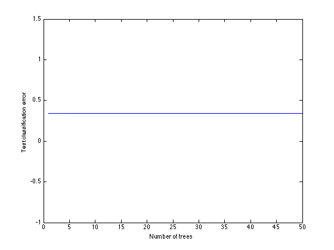
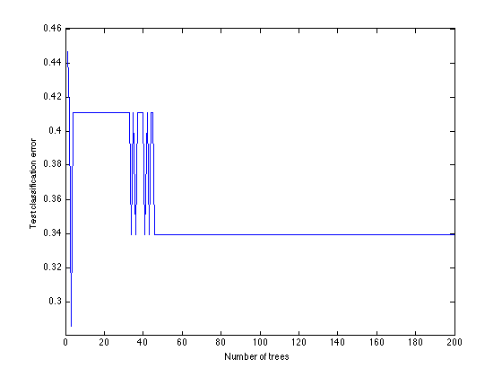
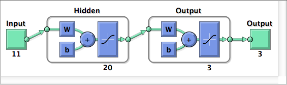

Contents
LOAD DATA
Releases 1, 2, 3, 4 and 6 are loaded as cross validation sets. Release 5 was selected as a test set as defined in the R script.
load('pdfbox_dataset.mat')
PRE PROCESSING
Assign X and y variables for classification
Xtrain = pdfbox_cv3(:,[1,2,4:end]); Ytrain = pdfbox_cv3(:,3);
ENSEMBLES
Train a AdaBoostM2 and an Bag Ensemble for classification
Xcv = pdfbox_test(:,[1,2,4:end]); Ycv = pdfbox_test(:,3); %Fit an AdaBoostM2 with 50 trees as weak learners. ens = fitensemble(Xtrain,Ytrain,'AdaBoostM2',50,'Tree'); %Plot error graph as the number of tree increases figure; plot(loss(ens,Xcv,Ycv,'mode','cumulative')); xlabel('Number of trees'); ylabel('Test classification error'); % Confusion Matrix for AdaBoostM2 [C, order] = confusionmat(Ycv,predict(ens,Xcv),'order', [1 2 3]) %Fit a bag ensemble with 200 trees as weak learners. bag = fitensemble(Xtrain,Ytrain,'Bag',200,'Tree',... 'type','classification'); %Plot error graph as the number of tree increases figure; plot(loss(bag,Xcv,Ycv,'mode','cumulative')); xlabel('Number of trees'); ylabel('Test classification error'); % Confusion Matrix for Bag [C, order] = confusionmat(Ycv,predict(bag,Xcv),'order', [1 2 3])
C =
0 3 0
0 33 2
0 4 1
order =
1
2
3
C =
0 3 0
0 33 2
0 4 1
order =
1
2
3
  SVM Classification
predictionsXcv = multisvm(Xtrain,Ytrain,Xcv);
[C, order] = confusionmat(Ycv,predictionsXcv,'order', [1 2 3])
C =
0 3 0
7 27 1
1 3 1
order =
1
2
3
Neural Network Classification Feed Foward Back Propagation
Preprocess the class so that each row consists of the classes 1, 2, 3 in 0s and 1s in YtrainANN.
num_labels = 3; YtrainANN = zeros(size(Ytrain,1),3); for c = 1:num_labels YtrainANN(:,c) = (Ytrain == c); end YtrainANN = YtrainANN'; % For the input data XtrainANN each row shoud contain a given feature. % We apply feature scalling and mean normalization. [XtrainANN,etc,etc] = featureNormalize(Xtrain); XtrainANN = XtrainANN'; % Create a feed foward ANN with 1 hidden layer containing 10 nodes. net = patternnet(20); [net, tr] = train(net,XtrainANN,YtrainANN); %plotperform(tr) view(net) % Predictions contains on each column the probability of a data point % to belong to a given class (row 1 is class 1, row 2 is class 2 and % row 3 is class 3. XcvANN = featureNormalize(Xcv); XcvANN = XcvANN'; predictionsANN = net(XcvANN); % We assign the predicted class of a given data point to be the one with % maximum probability. This give us a column vector of the same type as % YtrainANN but containing the ANN predicted values. %predClass is the % assigned class for a given data point and probClass contains the % associated probability of being of that class. [probClass,predClass] = max(predictionsANN', [], 2); %perf = perform(net,YtrainANN,predictionsANN); %classes = vec2ind(YtrainANN); % Lastly we plot the confusion matrix. [C, order] = confusionmat(Ycv,predClass,'order', [1 2 3])
C =
0 2 1
0 32 3
0 4 1
order =
1
2
3
